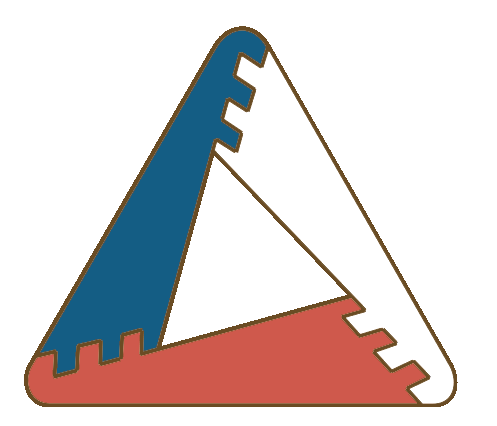
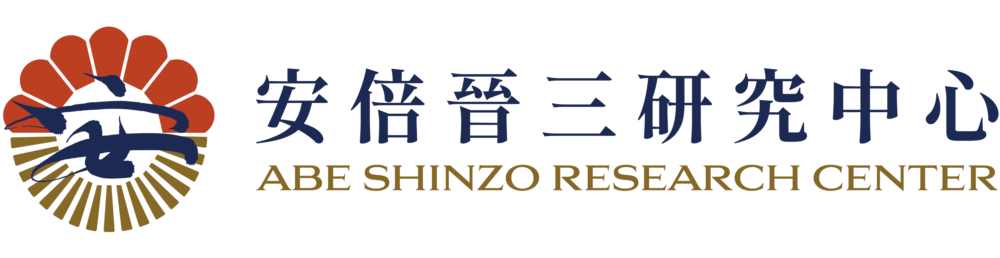

2026 テラ学校
地の校 成果展
都市と農村の共創と持続可能な食と農：日台共同行動 × AI協調のデザイン思考
早稲田大学と台湾清華大学の学生による宜蘭でのフィールドワーク。土とテクノロジーの境界で、持続可能な食農の答えを探る。

活動記録
AI協調のデザイン思考
カードをクリックして、日台両校が共創したデザイン思考とAI協調の実踐ガイドを参照します
1. Discover 脈絡探索
DISCOVER宜蘭員山と南澳でのフィールドワークや関係者インタビューを通じて、地域の真のニーズを発掘。
2. Define 課題定義
DEFINE小農や老農のペインポイントに焦点を当て、AIを活用して音声データを分析し、核心的課題（HMW）を抽出。
3. Develop 共創発想
DEVELOP日台の学生が国境を越えてブレインストーミングを行い、解決策をスケッチ、プロトタイプを作成。
4. Deliver 現場検証
DELIVER食農、教育、生活に焦点を当てた実用最小限の製品（MVP）を発表し、現地で検証を実施。
5日間の学習の旅
宜蘭員山、南澳、佛光大学での現地実践の軌跡
土地感知と員山踏査 Day 1
自然田に入り、規格外品とサトウキビ文化を調査し、センサを起動。


多言語関係者インタビュー Day 2
農家や移住者と対話。AIで文字起こしを行い、データをインデックス化。


南澳エコ農場と製糖体験 Day 3
サトウキビ汁を手作業で煮詰め、土地の温もりと加工移行を体験。


国境を越えたアイデアソン Day 4
HMW課題を定義し、解決策をスケッチ、プロトタイプを作成。


成果発表会と審査 Day 5
地元農家や専門家にMVP提案を発表し、フィードバックを得る。


参加者の声
丁芯蕾
台湾清華大学受講生「張明麗先生の『医食同源』という言葉が印象的でした…実際に彼女がここに来た理由を語ってくれたことで、人と土地の結びつきの力の強さを本当に実感しました。」
上杉勇司
早稲田大学指導教員「座学は脳で知識を得ますが、今回は体で自然を感じました…価値観や制度が違っても、対面での深い交流は将来の国際的な協働能力の基礎になります。」
五十嵐悠月
早稲田大学受講生「農業は初めてで、日本発祥の秀明自然農法が台湾でも行われていることに繋がりを感じました…外国の学生とこれほど長い時間をかけて議論し、課題を解決するのも新鮮で楽しかったです。」
刁元廷
台湾清華大学受講生「農村は過疎化していると思っていましたが、多くの若者が『半農半X』として土地に戻り耕作している姿に驚きました…機会があれば自分も挑戦してみたいです。」
招姍姍 / 呂珈安
台湾清華大学受講生
「呂珈安：朝6時半に起きて歩くのは大変でしたが…これが農家の日常であり、頭が下がります。
招姍姍：日本の学生と短期間でプレゼンをまとめ、よくできたと言われたことは本当に実り多かったです。」
鄭伯宏
台湾清華大学受講生「体験学習やインタビューでとても充実した日々でした。午後のデザイン思考とAIの応用授業も、これからの研究に役立つ素晴らしいツールだと感じました。」
徐柏峯
アジャイルコーチ「現場に入り、観察と対話を通じて当事者の課題を理解することは、教室では学べない貴重な体験です。また、学生たちの自由で無限なクリエイティビティにも驚かされました…」
賴郁雯
プロジェクトリーダー「留学生と共同で実際の課題解決に挑むプロセスは、非常に深い交流を生みます…これほどの講師陣と環境で有意義な活動を開催できたことは、単独で行うよりはるかに効果的です。」
主催・パートナー
主催 Organizer

パートナー Partners


次回募集
メルマガを購読して、次回の地の校の事前情報や募集開始の通知を受け取りましょう！